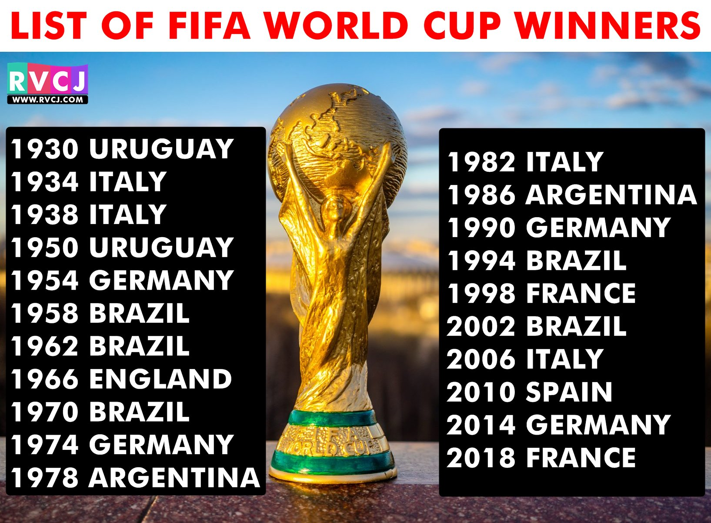

Go Back
- The sport of soccer (called football in most of the world) is considered to be the world's most popular sport.
- In soccer there are two teams of eleven players. Soccer is played on a large grass field with a goal at each end.
- The object of the game is to get the soccer ball into the opposing team's goal.
- Perhaps the most famous soccer tournament is the World Cup. Held every four years.
- The skill at which great players and great soccer teams work the ball, strategize, and flow as one can be an awesome thing to watch.
